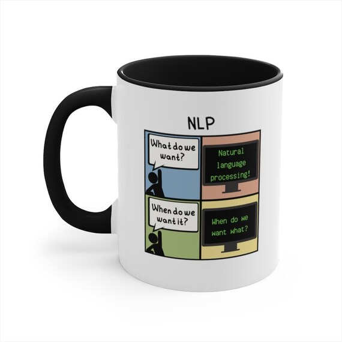
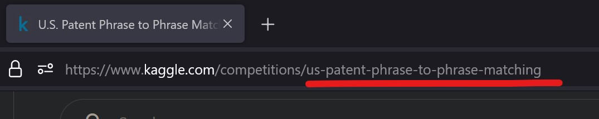
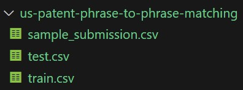
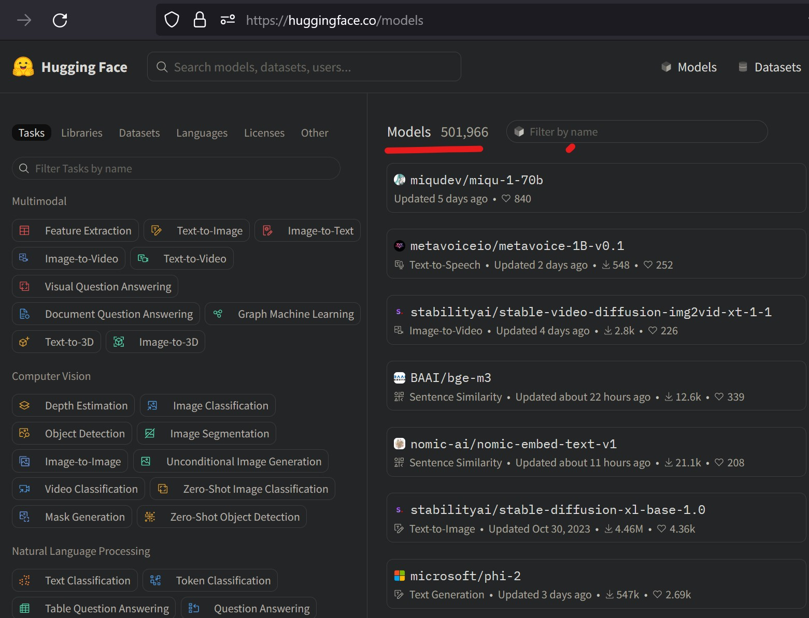

## 5. The notebook
# path
# !kaggle kernels pull -p kg -m "jhoward/getting-started-with-nlp-for-absolute-beginners"
1. What’s a Pre-trained Model
Recall in Neural Network Basics, A line was fit to a set of data by adjusting the parameters of a quadratic function:

A Pre-Trained Model is being like being told the coefficients that the coefficient of a is definitely 3 and b is around 2.
Fine-Tuning is process of finding the coefficients that are not known, in this case, c, whilst slightly moving a and b.
2. ULMFiT: 3 Stages of Transfer Learning in NLP
The ULMFiT process is shown in the diagram below:

- Build Language Model 1 Wikipedia:
- Goal: To predict the next word (or every next word) of every wikipedia article.
- Process: Started with random weights
- Acheivement: a model that can predict >30% correclty the next word in a wikipedia article.
- Build Language Model 2 IMDb:
- Goal: Predict next word of IMDb movie review.
- Process: Use Pre-trained model (i.e. its weights) from 1, run a few more epochs (fine-tune) with IMDb movie reviews
- Achievement: Predicted with high accuracy next word of IMbd review.
- Build IMDb Movie Review Classifier:
- Goal: Classify whether an IMDb movie review is positive or negative sentiment
- Process: Use pre-trained model (i.e. its weights ) from 2 and fine-tune.
- Achievement: Classify IMbd reviews.
3. Background: Inside the Layers
Zeiler and Fergus paper highlights:
High level 1. Layer 1: sets of weights that found diagonal edges, ie **edge detectors* 2. Layer 2: combined layer 1 ReLUs added together, sets of output so of those ReLUS, i.e Activations, then run through a MM ReLU, resulting in corner detectors 3. Layer 5: Bird and Lizard eyeball detectors, dog face dectors, flower detector and etc
ResNet50 has 50 layer.
The latter layers do things more specific to the training task, ie predicting whats being looked at.
Whilst the early layers, don’t change much as they’re generalised for most natural photos, sharp and rounded edges etc
4. Transformers Model (a different architecture)
Built to take advantage of accelerators (Googles TPUs).
Unlike ULMFit, Transformers didn’t predict the next word of the sentence.
However, it was trained by taking texts and deleting at random a few words and asked the model what were the models removed.
Comparisons to ULMfit: - RNN vs Transformer model - Language model vs Masked Language model
Hence, this post will focus on the more popular method, from the Transformer Models.
5. Kaggle Competition - US Patent Phrase-to-Phrase Matching
Goal: Make predictions with my own basic NLP model and make a succesful submission.
5.1 Set up API keys
Setting up the API Keys explained in a previous post.
from pathlib import Path
creds = ''
cred_path = Path('~/.kaggle/kaggle.json').expanduser()
if not cred_path.exists():
cred_path.parent.mkdir(exist_ok=True)
cred_path.write_text(creds)
cred_path.chmod(0o600)5.2 Setup Paths
Ensure correct competition name is set to path :us-patent-phrase-to-phrase-matching, otherwise data wont be found.
Easy way is just the string after competitions/ in the URL:

path = Path('us-patent-phrase-to-phrase-matching')
pathWindowsPath('us-patent-phrase-to-phrase-matching')5.3 Download Competition Datasets
A folder will be created with related csvs files:

import os
iskaggle = os.environ.get('KAGGLE_KERNEL_RUN_TYPE', '')
if not iskaggle and not path.exists():
import zipfile,kaggle
kaggle.api.competition_download_cli(str(path))
zipfile.ZipFile(f'{path}.zip').extractall(path)5.4 Look at Data
Open up train.csv and take a look
import pandas as pd
df = pd.read_csv(path/'train.csv')
df.describe(include='object')| id | anchor | target | context | |
|---|---|---|---|---|
| count | 36473 | 36473 | 36473 | 36473 |
| unique | 36473 | 733 | 29340 | 106 |
| top | 37d61fd2272659b1 | component composite coating | composition | H01 |
| freq | 1 | 152 | 24 | 2186 |
6. Modelling
6.1 What is the problem to be solved?
Goal: Given two words or short phrases, make a prediction (scoring) them on similiarity. - 1: identifiy meanings - 0: totally different meanings - 0.5: somewhat similar but not identical.
Process: Represent as a classification problem by concatenating various important columns into a text separated by its constant header: - txt1: context
- txt2: target
- txt3: anchor
- category of similarity: One of 3 categories [different; similar; identical];
Thus, the cateogry of similar is the what is to be predicted for unseen data.
df['input'] = 'TEXT1: ' + df.context + '; TEXT2: ' + df.target + '; ANC1: ' + df.anchor6.2 Take a look at the new column input
df.input.head()0 TEXT1: A47; TEXT2: abatement of pollution; ANC...
1 TEXT1: A47; TEXT2: act of abating; ANC1: abate...
2 TEXT1: A47; TEXT2: active catalyst; ANC1: abat...
3 TEXT1: A47; TEXT2: eliminating process; ANC1: ...
4 TEXT1: A47; TEXT2: forest region; ANC1: abatement
Name: input, dtype: object6.3 Tokenization
Neural networks don’t accept text, it accets numbers as inputs. Text needs to coverted in two methods:
[Stage 2]: Numericalization: Convert each word (or token) into a number.
Notes: - A token is the general concept of what each split is, rather than words. - The Tokenization stage involves many decisions that need to be made. - These decisions are made by the pre-trained model needs to be followed exactly in order to have the exacty same vocabulary. - Before tokenizing, the decision to choose what model to use must be made. - The huggingface model hub has thousands of pre-trained models:

from datasets import Dataset,DatasetDict
hf_ds = Dataset.from_pandas(df) #pd df to hf df
hf_ds # shows the features and number of rowsDataset({
features: ['id', 'anchor', 'target', 'context', 'score', 'input'],
num_rows: 36473
})[Question] is there a graph to show which models are best, fastest, most accurate for NLP, like they did for CV on timms?
6.4 Pick a Language model
Picking a model is important because we must tokenize in the same way.
model_nm = 'microsoft/deberta-v3-small'6.5 AutoTokenizer
from transformers import AutoModelForSequenceClassification,AutoTokenizer
tokz = AutoTokenizer.from_pretrained(model_nm)NameError: name 'AutoTokenizer' is not definedrand(notes)
- nn = numbers * matrices -> apply relu -> add up -> repeat
- after splitting -> list of unique words = vocab
- each new world -> a number
- bigger vocab -> more memory -> more data to train (we wont want vc to be too big)
- less memory - ‘tokenize’ with sub-words (hugging face txformers and dataset to do it)